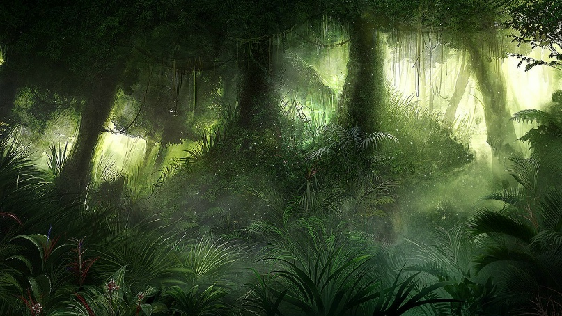

Флора Поэдрума
Поэдрум ещё с древних времён самостоятельно кормил своих жителей. Несмотря на бесплодные южные части, северная — это огромные джунгли, с десятками рек и сотнями водоёмов. Заблудиться там практически элементарно, как и потерять свою жизнь от дикого зверя.

Тем не менее, сейчас большие территории были колонизованы безжалостной цивилизацией и используются под сельское хозяйство — немало лесов было вырублено. Оросительные каналы есть и в южных песках, и на каменистых равнинах — иногда там даже удаётся что-то выращивать. Однако весь сельскохозяйственный потенциал Поэдрума ещё далеко не исчерпан, как и его дивная природа всё ещё не перестаёт восхищать.
География Мериона · Поэдрум · Флора